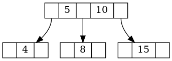

Intervalo em Árvore 2–3
Considere a seguinte definição de um nó de uma árvore 2–3:
typedef struct No23 {
int key[2];
struct No23 *child[3];
int nkeys;
} No23;
Cada nó pode conter uma ou duas chaves válidas, armazenadas em key[ ], bem como até três ponteiros para filhos. O campo nkeys indica o número de chaves presentes no nó.
Suponha que você tenha uma árvore 2–3 apontada pelo ponteiro p, conforme ilustrado na figura a seguir:

A tarefa consiste em:
contar o número de chaves da árvore 2–3 apontada por p cujos valores estejam no intervalo fechado [a,b], isto é, tais que a ≤ chave ≤ b, e armazenar o resultado na variável resp.
No exemplo acima, considerando a = 6 e b = 12, o resultado esperado é:
resp => 2
Isso ocorre porque as chaves {8, 10} pertencem ao intervalo [6, 12].